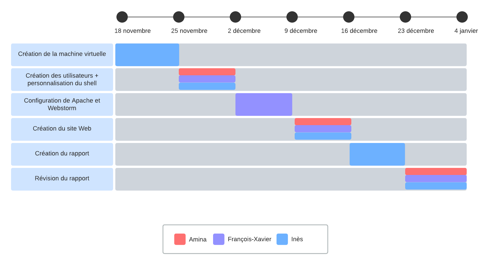

Le site a été conçu sous forme d'étapes progressives, ce qui explique la présence de 3 pages distinctes (en plus de la page d'accueil).
Chaque page reflète une phase clé du projet.
Dans l'ensemble, le projet s'est avéré enrichissant, chacun apportant son lot de défis et d'apprentissages. L'installation de la machine virtuelle nous a permis de comprendre les bases, comme la définition, la création et la gestion d'une machine sous Ubuntu. L'usage du web nous a permis de concrétiser le projet malgré des problèmes techniques imprévus lors du déploiement du site. Mais cela nous a tout même permis de mieux comprendre les enjeux techniques. Enfin, nous avons synthétisé nos travaux à travers une documentation complète. Malgré quelques difficultés techniques, ce projet a été très formateur.
Pour mener à bien ce projet nous nous sommes réparti les tâches de la façon indiquée dans ce diagramme de Gantt :
